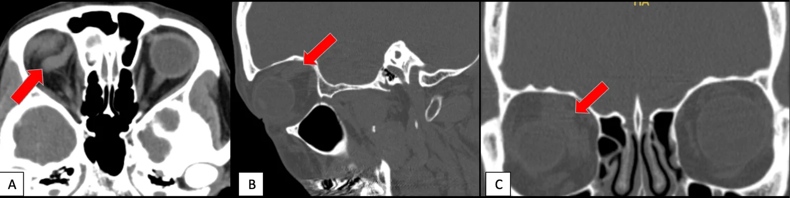
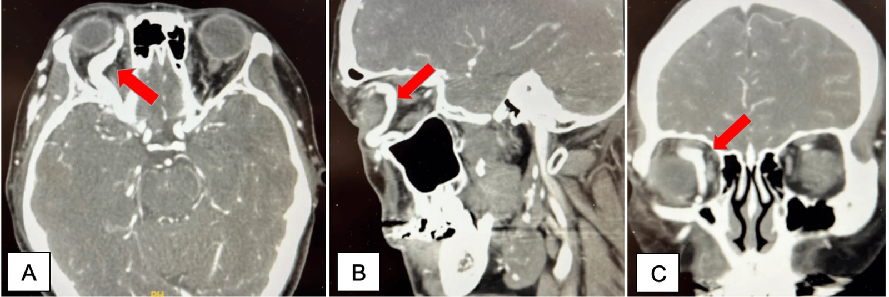

423 — Fistula xoang hang vs huyết khối / CCF vs Cavernous thrombosis
Tags: pattern:mach-xoang-hang vung:xoang-hang
Mức chắc chắn (certainty): tổng hợp y văn (literature synthesis) — nhóm tự biên từ y văn mở, chưa gắn ca nguyên văn đơn lẻ.
1. Tổng quan — máu ĐM vào xoang TM + tiếng thổi là chốt
- Fistula ĐM cảnh–xoang hang: trực tiếp dòng cao (chấn thương vỡ nền sọ ~4%, nam trẻ) vs gián tiếp dòng thấp (tự phát, nữ lớn tuổi, mô liên kết).
- TẠI SAO mắt đỏ + lồi + tiếng thổi: tăng áp TM ổ mắt (giãn TM mắt trên) + ứ máu; liệt III/IV/VI do dây đi trong xoang hang.
- Giai đoạn muộn giống TED: tăng áp TM ổ mắt → phù/giãn cơ vận nhãn + mỡ ổ mắt → lồi mắt, cơ to lan tỏa (do ứ máu, không phải bệnh cơ); khác TED ở TM mắt trên giãn, đổ đầy sớm xoang hang, tiếng thổi, thường 1 bên + giãn mạch kết mạc–giác mạc.
- Ngưỡng: DSA là tiêu chuẩn vàng + nút mạch cùng lúc (coil/bóng, giữ dòng ĐM cảnh trong).
2. Gamut mắt đỏ + lồi + tiếng thổi
- CCF trực tiếp: chấn thương + đột ngột + tiếng thổi — nút mạch cấp cứu.
- CCF gián tiếp: tự phát âm ỉ + đỏ mắt mạn — theo dõi/nút chọn lọc.
- Huyết khối xoang hang: sốt + nhiễm trùng mặt/xoang + nhiều dây TK + lan 2 bên — kháng sinh + kháng đông.
- Graves/cellulitis: cơ/xoang đặc trưng, không tiếng thổi (bài 421/422).
3. Bảng so sánh
| Thực thể (entity) | Hình ảnh (CTA/DSA) | Chốt vào (rule-in) | Chốt loại (rule-out) | Gợi ý xác nhận |
|---|---|---|---|---|
| CCF trực tiếp | SOV giãn + đổ đầy sớm xoang + chấn thương | Tiếng thổi + SOV giãn + chấn thương | Sốt + lan 2 bên → huyết khối | DSA + nút mạch |
| CCF gián tiếp | SOV giãn nhẹ + đỏ mạn | Tự phát + âm ỉ | Đột ngột + chấn thương → trực tiếp | Theo dõi/nút mạch |
| Huyết khối XH | Khuyết thuốc xoang + sốt + lan 2 bên | Sốt + nhiễm trùng + nhiều dây TK | Tiếng thổi → fistula | Kháng sinh + kháng đông |

CT: giãn TM mắt trên phải. Nguồn: Cochrane et al., Cureus 2026 Fig. 2, CC BY 4.0.
CTA: đổ đầy sớm + varices mặt. Nguồn: Cochrane et al., Fig. 3, CC BY 4.0.4. Protocol
- CT/CTA đầu-mặt-cổ: SOV + đổ đầy sớm + varices + lồi mắt.
- DSA + nút mạch (giữ dòng ĐM cảnh); theo dõi hết tiếng thổi + xẹp SOV.
- Huyết khối: kháng sinh + kháng đông + dẫn lưu ổ nhiễm.
5. Cạm bẫy
- Mắt đỏ mạn tưởng dị ứng 2 tháng (ca gốc: cetirizine + steroid không đỡ) — nghe tiếng thổi mọi đỏ mắt 1 bên kéo dài.
- Không chấn thương vẫn có CCF (EDS, loạn sản sợi-cơ) — hỏi mô liên kết + gia đình (cha vỡ phình).
- Biến chứng muộn: tăng nhãn áp góc đóng, XH dịch kính, bong võng mạc, XH nội sọ — đừng chờ.
- Cơ to + lồi mắt bị gọi TED: ở CCF cơ to do ứ máu TM, không phải bệnh cơ; tìm tiếng thổi + SOV giãn + đổ đầy sớm. TED chừa gân + TRAb (+); CCF chốt bằng mạch máu (bài 421).
6. Tự lượng giá — Blind Quiz
Ca 1 — Sưng quanh mắt phải 2 tháng + nhìn mờ + đau vận nhãn + tiếng thổi. Đọc CT/CTA.
- Hỏi: TM nào giãn? Chẩn đoán? Bước vàng tiếp theo?
Bấm để hiện đáp án
- CCF trực tiếp dòng cao: SOV giãn + đổ đầy sớm — DSA + nút mạch coil (hết triệu chứng).
- Nguồn: Cochrane et al., Fig. 2–3, CC BY 4.0.
Ca 2 — Sốt + sưng 2 mắt + liệt nhiều dây sau nhọt mặt: fistula hay huyết khối? (Bảng mục 3.)
Bấm để hiện đáp án
- Huyết khối xoang hang: sốt + nhiễm trùng + lan 2 bên — kháng sinh + kháng đông.
Bài liên quan chéo
- 400 – Tổng quan Mắt
- 421 – Lồi mắt Graves (lồi không mạch)
- 460 – Can thiệp mạch (đã có) (nút mạch)
Không dùng để chẩn đoán độc lập khi chưa có người hướng dẫn.